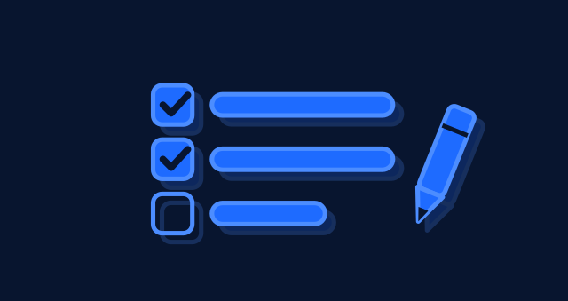
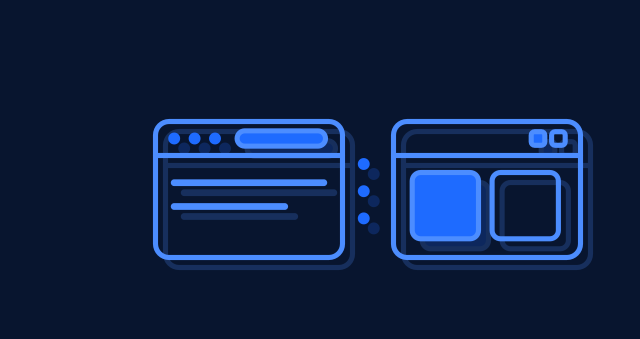

Proposal only — not integrated. Tokens: navy-900 ground, electric-500 fill, electric-400 outline, offset shadow, 85% inset, no text.
Card size — 640 × 339 (desktop / feed cards)

01 · AI Tools — How to Choose an AI Writing Tool (checklist + pencil)02 · Tutorials — Prompt Patterns That Actually Improve AI Output03 · Automation & Agents — How to Automate Repetitive Work (Input → Processing → Output)04 · Comparisons — AI Assistants vs Traditional Software05 · AI News — How to Verify AI News (two sources cross-referenced + lens)

06 · Software & Web — Browser-Based vs Installed AI Tools